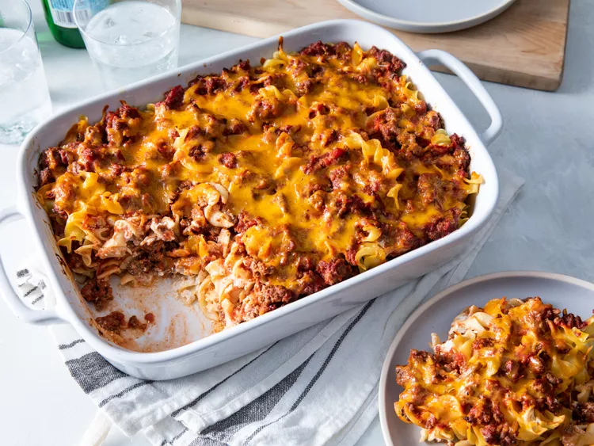

Lasagna

Description
These ground beef casseroles offer quick-and-easy comfort food that everyone in your family will love. From a grandma-style hamburger casserole recipe to an easy Mexican casserole recipe, there's a ton of variety for your next weeknight dinner. Even better, many of these recipes freeze like a dream so you can store them away for last-minute meals. Keep reading for our favorite casserole dishes that all feature ground beef.
Ingredients
- 1 pound ground beef
- 2 (15 ounce) cans tomato sauce
- 1 teaspoon white sugar, or to taste
- 1 teaspoon garlic salt, or to taste
- 1 teaspoon salt, or to taste
- 1 (8 ounce) package egg noodles
- 1 cup sour cream
- 3 ounces cream cheese, softened
- 1 large white onion, finely diced
- ½ cup shredded sharp Cheddar cheese, or more to taste
Directions & Steps
- Heat a large skillet over medium-high heat. Cook and stir ground beef in the hot skillet until browned and crumbly, 5 to 7 minutes; drain and discard grease.
- Mix tomato sauce, sugar, garlic salt, and salt into the ground beef; simmer until flavors blend, about 20 minutes. Remove from the heat and cover the skillet.
- While the sauce is cooking, bring a large pot of lightly salted water to a boil. Cook egg noodles in the boiling water, stirring occasionally until cooked through but firm to the bite, 7 to 9 minutes. Drain.
- While the egg noodles are cooking, preheat oven to 350 degrees F (175 degrees C). Grease a 9x13-inch casserole dish.
- Mix sour cream, cream cheese, and onion together in a bowl.
- Layer 1/2 of the egg noodles into the prepared casserole dish. Top with 1/2 of the sour cream mixture, then 1/2 of the ground beef mixture. Repeat layers once more. Sprinkle Cheddar cheese over top.
- Bake in the preheated oven until cheese is melted and golden brown, 25 to 30 minutes.
Acceuil